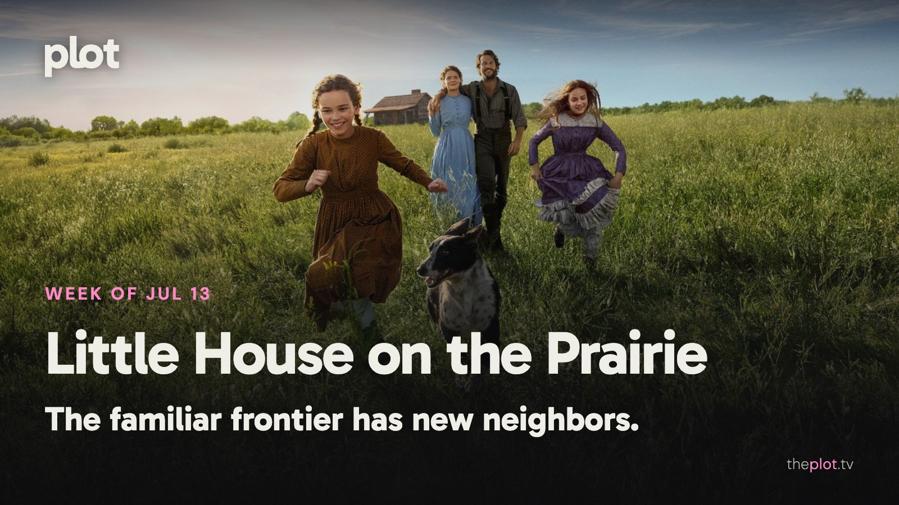

|
the week of July 13
|
|
The Ingalls family is starting over, and so is Moana. One return is inviting viewers to reassess a childhood favorite; the other is discovering that familiar songs don't guarantee a packed theater. This week also brings Anya Taylor-Joy on the run, Will Ferrell refusing to retire, and Christopher Nolan sending Matt Damon on a much longer trip home.
 Image: Little House on the Prairie (2026), promotional backdrop. Source: TMDB. Text overlay by Plot.
In theaters
 Image: Moana (2026), promotional backdrop. Source: TMDB.
Moana's live-action return opened to an estimated $43 million domestically over July 10-12, below Disney's roughly $60 million expectation. For a major remake, that is a disappointing start rather than an automatic victory lap.
Evil Dead Burn is the week's much less family-friendly reunion. Its review discussion shows critics differing on whether the brutality is inventive or exhausting. The appetite for gore matters more here than affection for a familiar title.
Minions & Monsters turns the little yellow agents of chaos into aspiring filmmakers. AP finds the Hollywood in-jokes more tiring than inspired. The adults recognizing the references may not be the same people laughing at them.
What everyone's talking about
Little House on the Prairie is exposing two different kinds of nostalgia. Some viewers want the comfort of the old television show; others want the particular childhood perspective of the books. In a substantial fan discussion, the new Netflix series draws criticism for feeling polished and contemporary, alongside defenses of its broader community. The Los Angeles Times sees fidelity to the novel's spirit despite changes. A remake can keep the people and still change what it feels like to live beside them. Find Little House on the Prairie on Plot.
Moana has a remake problem that affection alone can't solve. Its songs and heroine remain easy to love, but those are also reasons to watch the animated original. TheWrap's review argues that the live-action film adds too little to justify the return. That criticism leaves room for Catherine Laga'aia's promise as a performer. The question is what this version lets her make her own. Familiarity can be a family outing's selling point; it is a harder answer to why a film needed making again.
Production note. This line is not in the sent letter.
GIF: Trying to make a dignified entrance while everything around you is chaos. Savannah to choose the GIF. Now on TV and Streaming
 Image: Little House on the Prairie (2026), promotional backdrop. Source: TMDB.
Netflix's new Little House on the Prairie series follows the Ingalls family building a home on the frontier. Work, weather, and growing children supply the stakes. Try it when you want family drama without a murder board.
 Image: Shipwrecked: Nightmare at Sea (2026), promotional backdrop. Source: TMDB.
Shipwrecked: Nightmare at Sea is Netflix's documentary film about the 2012 cruise disaster. Survivor testimony and footage put you inside a holiday becoming an emergency. Save the cruise browsing for a different evening.
Coming up
|
|
You're receiving this because you subscribed at theplot.tv.
Unsubscribe
SUSUMU HOUSE · Level 1, 63-73 Ann Street, Surry Hills, NSW 2010 |
 Play the official trailer
Play the official trailer Play the official trailer
Play the official trailer Play the official trailer
Play the official trailer